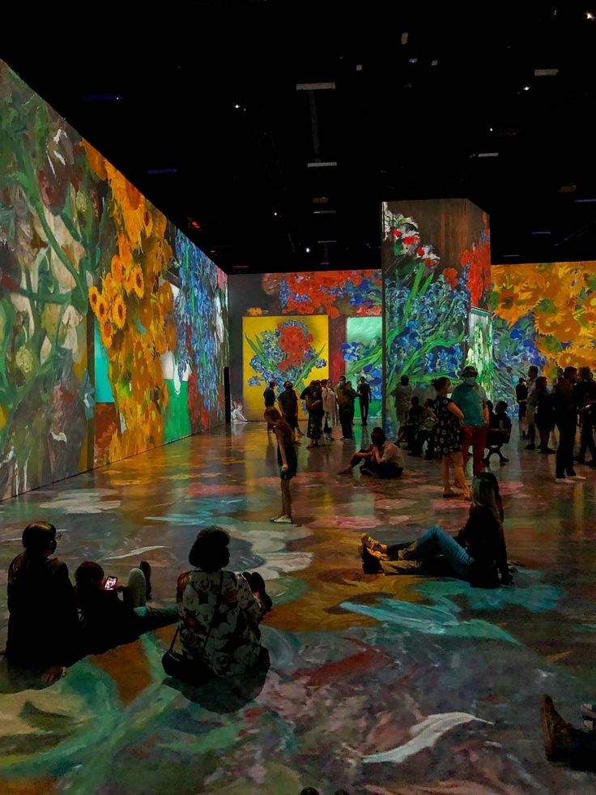

About me
I’m Claude Monet, a pioneering French painter and key figure in the Impressionist movement. I focus on capturing the effects of light and atmosphere with loose brushwork and vibrant colors. Notable works include *Impression, Sunrise*, which named the movement, and my *Water Lilies* series. My approach emphasizes natural light and the changing appearance of scenes, profoundly influencing modern art.

My artworks
1. **Impression, Sunrise (1872)**
- **Description:** This painting of the port of Le Havre at dawn is known for its loose brushwork and vibrant colors. It gave the Impressionist movement its name and captures the transient effects of light.
2. **Water Lilies Series (1897-1926)**
- **Description:** A series of approximately 250 paintings depicting the water lilies in my garden pond at Giverny. These works explore reflections and changing light on water, creating immersive, serene landscapes.
3. **Haystacks Series (1890-1891)**
- **Description:** This series portrays haystacks in various seasons and times of day. The paintings emphasize how natural light affects color and form, capturing the changing atmosphere.
4. **Rouen Cathedral Series (1892-1894)**
- **Description:** A series of paintings depicting the façade of Rouen Cathedral from different angles and under various lighting conditions, showcasing how light and weather transform the appearance of the building.
5. **Woman with a Parasol (1875)**
- **Description:** This painting features my wife Camille and our son Jean in a breezy summer setting. It captures the movement of the wind and the play of light on the figures and landscape.
These artworks reflect my interest in the effects of light and atmosphere, and they highlight my innovative approach to capturing the fleeting moments of natural beauty.
Exhibitions
Certainly! Here’s a brief overview of my notable exhibitions:
1. **1962: **First Solo Show at Eleanor Ward’s Stable Gallery, New York**
- **Description:** This early solo exhibition featured my iconic *Campbell’s Soup Cans* and marked a significant moment in my career, introducing my work to a broader audience.
2. **1964: **Solo Exhibition at the Leo Castelli Gallery, New York**
- **Description:** This show included works like *Brillo Boxes* and *Marilyn Diptych*, cementing my reputation in the art world and showcasing my exploration of consumer culture and celebrity.
3. **1966: **“The American Supermarket” Exhibition**
- **Description:** Held at the Bianchini Gallery in New York, this exhibition transformed the gallery space into a simulated supermarket, featuring art that commented on consumerism and mass production.
4. **1968: **Exhibition at the Sidney Janis Gallery, New York**
- **Description:** This exhibition highlighted my experimentation with different media, including my film work and new art series, reflecting my ongoing exploration of art and commercial culture.
5. **1975: **“Andy Warhol: The Retrospective” at the Musée d’Art Moderne, Paris**
- **Description:** This retrospective was a major survey of my work, showcasing my influence and contributions to contemporary art on an international stage.
6. **1989: **Posthumous Retrospective at the Museum of Modern Art (MoMA), New York**
- **Description:** After my death, MoMA organized a major retrospective that provided a comprehensive look at my career and impact on art and culture.
7. **2009: **“Andy Warhol: The Family Album” at the Museum of Modern Art (MoMA), New York**
- **Description:** This exhibition focused on my lesser-known works and personal photographs, offering new insights into my life and artistic process.
These exhibitions have played a key role in establishing and celebrating my legacy in the art world, showcasing the innovative approaches and themes that define my work.